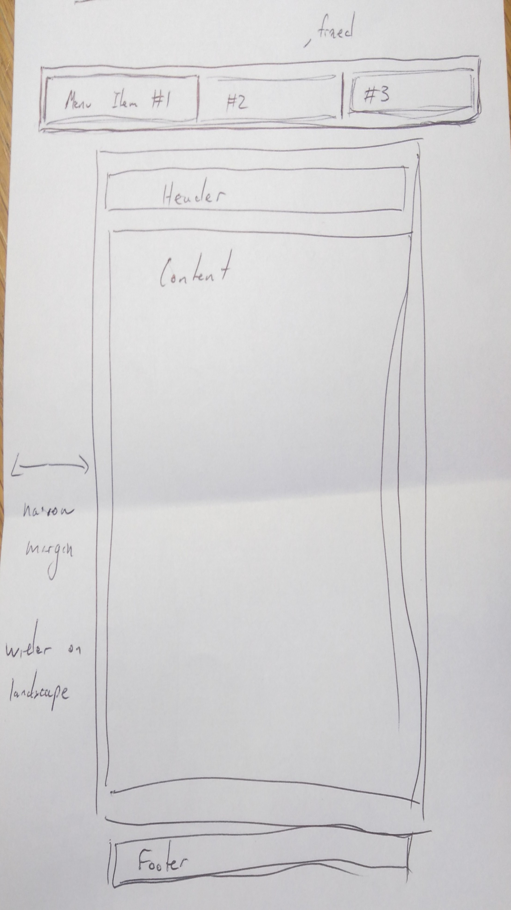
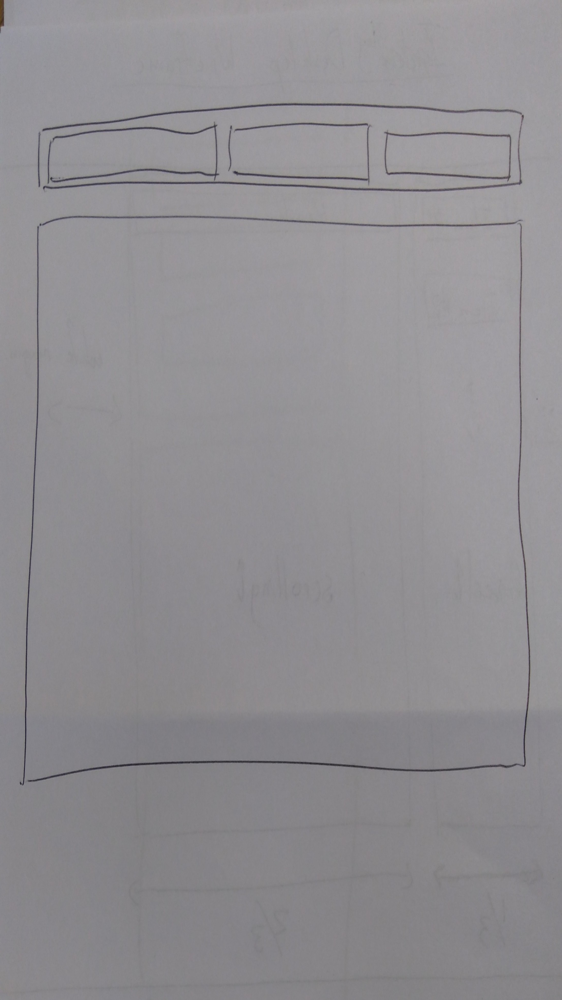

Design to Build Process
What is a responsive site? Why is it important?
A responsive site is one that responds to the kind of device it is being viewed on. This usually means adopting an appropriate layout. Today the type and especially screen-size of device a website viewer might be using can vary greatly. It's important that the website looks good and functions well for all potential users.
What is mobile first design? Why is that important?
Mobile-first design is web design and implementation that defaults to mobile-focused web behaviour which can then adjust
to desktop-focused as needed (instead of the other way around). The first driver towards this method of design is increasing numbers
of mobile viewers, if the majority of users of a site are accessing it through mobile devices, then it makes sense for that to be the primary
layout.
Aside from numbers there are a couple of other reasons why it makes technical sense to do it this way:
-
Mobile devices have less processing power (and sometimes less robust internet connections) than desktops and larger devices, Making site design mobile first means the lower powered end of the device spectrum has to deal with the least possible irrelevant formatting or code. The larger devices will have a little bit more overhead as they recieve first the default mobile layout and stack changes on top of it, but they can handle it better.
-
It is usually easier to design for a smaller space and then re-arrange things to fit on a bigger screen than the other way around. In other words it's easier to take a clean mobile design and rejig it for a desktop screen than the other way around.
What is a framework? What are its advantages and disadvantages?
'Framework' is a good word to describe them, if you were making a chest of drawers and the frame was already there, you would have an easier job getting
to the finished product than you would sDesign to Build Processtarting from raw materials. A framework basically provides this in the form of prewritten css code. A general style, layout
and set of tools are all there, the work of building a site is made easier and you skip having to write a few things from scratch.
On the otherhand you trade that for some loss of flexibility, trying to include some feature that doesn't go easily with the frame you've chosen can be
more trouble than it's worth. It's important to have a clear idea of what you want the site to look like and do, and know
what your potential framework is capable of and limited by. Otherwise you've got to be willing to compromise your design to some extent so that it works well with the framework
For example I redesigned this site with the skeleton framework. Before I did that I had a fixed header on the top of my scrolling pages which I initially included
in my skeleton design, after a bit of playing I found this was going to be extra effort given other aspects of design that I was using the framework for,
so I put this feature on the back burner. It's still possible but I'll have to wriggle a bit.
What is a wireframe? What is it used for?
A wireframe is boxified sketch that contains all the important layout information needed for a webpage, it contains all you need to know but
doesn't have detailed drawings of design aspects, it's more like a plan. This is an important step between having a mental vision or a graphic design of the intended site and starting to code out the semantic structure.
It's quick to do and provides a lot of clarity. It would be difficult to start coding without a wireframe unless you had a very clear mental picture.
Wireframes for this Site
Desktop Blog Page

Mobile Blog Page
Desktop Home Page
Mobile Home Page
Wire-framing Process and Implementation
I found wire-framing the index/home pages quite difficult. I separated an 'archive' page containing links to all blogs from the main home page
which shares the same layout, I guess this made
the homepage itself a bit redundant. It was easier to think about a blog page, you can see in the above photos these frames had a bit more detail.
Knowing what I wanted in enough detail to start sketching was difficult, I like the iterative process; creating a model, coding it,
looking at it and interacting with it and then using that to refresh the original design. Having gotten a bit stuck
with getting the initial design out on paper I just focussed on a basic design and left the rest to later iterations, now after
the first loop I can think of a few ways I'd like to adjust my sketches and then use those new models to rework the site.
One aspect that has been tricky to implement is a fixed header/side menu. I really like this feature and had it working in my previous version of the site.
Now that I have a responsive menu that is sometimes above, sometimes to the side of the content, I found implementing fixed menus a new challenge, I'll keep working on this.